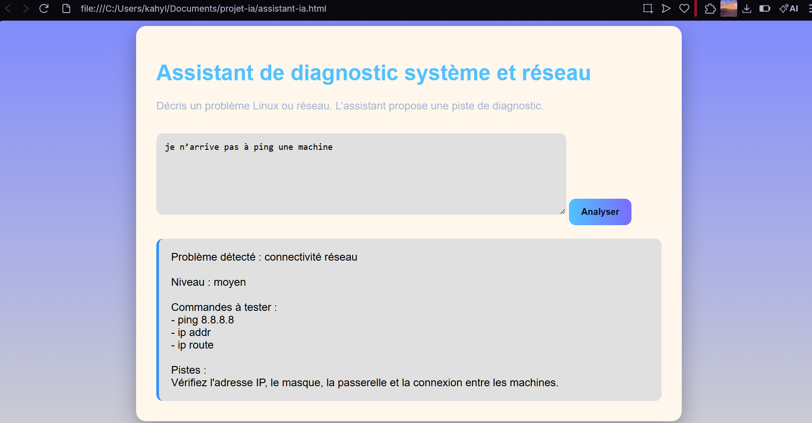
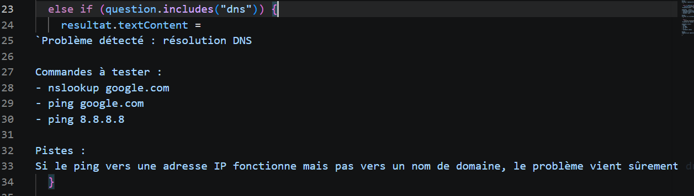
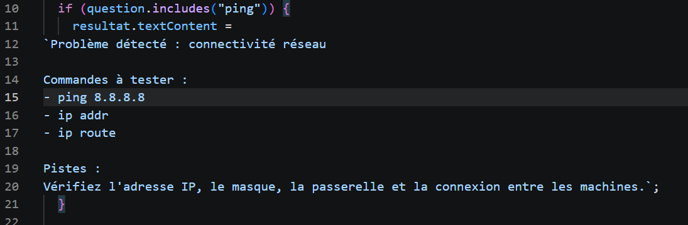

Assistant de diagnostic système et réseau
Ce projet permet d’analyser des problèmes réseau et Linux à partir de mots-clés. L’utilisateur saisit une demande et l’application propose une solution.
Interface

Exemple DNS

Exemple PING

Code JavaScript


